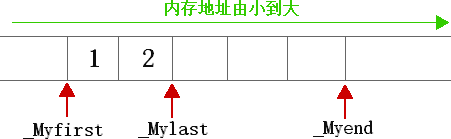
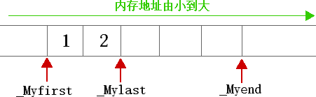

首页 > 编程笔记
C++ vector（STL vector）底层实现机制（通俗易懂）
STL 众多容器中，vector 是最常用的容器之一，其底层所采用的数据结构非常简单，就只是一段连续的线性内存空间。
通过分析 vector 容器的源代码不难发现，它就是使用 3 个迭代器（可以理解成指针）来表示的：
图 1 演示了以上这 3 个迭代器分别指向的位置。

图 1 vector实现原理示意图
如图 1 所示，通过这 3 个迭代器，就可以表示出一个已容纳 2 个元素，容量为 5 的 vector 容器。
在此基础上，将 3 个迭代器两两结合，还可以表达不同的含义，例如：
通过分析 vector 容器的源代码不难发现，它就是使用 3 个迭代器（可以理解成指针）来表示的：
//_Alloc 表示内存分配器，此参数几乎不需要我们关心
template <class _Ty, class _Alloc = allocator<_Ty>>
class vector{
...
protected:
pointer _Myfirst;
pointer _Mylast;
pointer _Myend;
};
其中，_Myfirst 指向的是 vector 容器对象的起始字节位置；_Mylast 指向当前最后一个元素的末尾字节；_myend 指向整个 vector 容器所占用内存空间的末尾字节。图 1 演示了以上这 3 个迭代器分别指向的位置。

图 1 vector实现原理示意图
如图 1 所示，通过这 3 个迭代器，就可以表示出一个已容纳 2 个元素，容量为 5 的 vector 容器。
在此基础上，将 3 个迭代器两两结合，还可以表达不同的含义，例如：
- _Myfirst 和 _Mylast 可以用来表示 vector 容器中目前已被使用的内存空间；
- _Mylast 和 _Myend 可以用来表示 vector 容器目前空闲的内存空间；
- _Myfirst 和 _Myend 可以用表示 vector 容器的容量。
通过灵活运用这 3 个迭代器，vector 容器可以轻松的实现诸如首尾标识、大小、容器、空容器判断等几乎所有的功能，比如：对于空的 vector 容器，由于没有任何元素的空间分配，因此 _Myfirst、_Mylast 和 _Myend 均为 null。
template <class _Ty, class _Alloc = allocator<_Ty>>
class vector{
public：
iterator begin() {return _Myfirst;}
iterator end() {return _Mylast;}
size_type size() const {return size_type(end() - begin());}
size_type capacity() const {return size_type(_Myend - begin());}
bool empty() const {return begin() == end();}
reference operator[] (size_type n) {return *(begin() + n);}
reference front() { return *begin();}
reference back() {return *(end()-1);}
...
};
vector扩大容量的本质
另外需要指明的是，当 vector 的大小和容量相等（size==capacity）也就是满载时，如果再向其添加元素，那么 vector 就需要扩容。vector 容器扩容的过程需要经历以下 3 步：- 完全弃用现有的内存空间，重新申请更大的内存空间；
- 将旧内存空间中的数据，按原有顺序移动到新的内存空间中；
- 最后将旧的内存空间释放。
由此可见，vector 扩容是非常耗时的。为了降低再次分配内存空间时的成本，每次扩容时 vector 都会申请比用户需求量更多的内存空间（这也就是 vector 容量的由来，即 capacity>=size），以便后期使用。这也就解释了，为什么 vector 容器在进行扩容后，与其相关的指针、引用以及迭代器可能会失效的原因。
vector 容器扩容时，不同的编译器申请更多内存空间的量是不同的。以 VS 为例，它会扩容现有容器容量的 50%。
关注公众号「站长严长生」，在手机上阅读所有教程，随时随地都能学习。内含一款搜索神器，免费下载全网书籍和视频。

微信扫码关注公众号